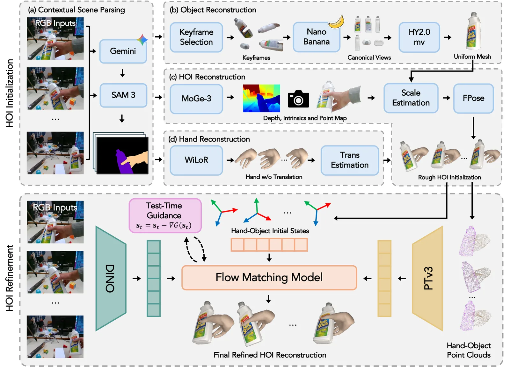
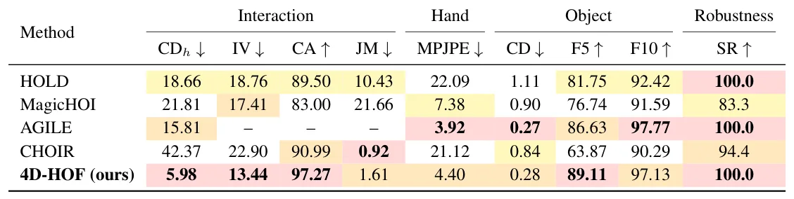
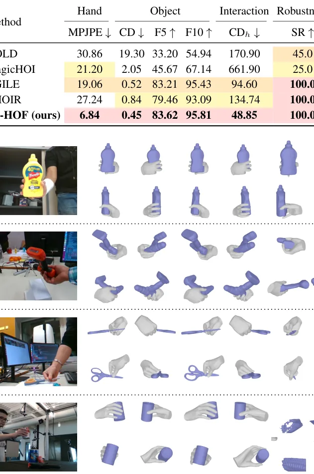

O problema: reconstruir interações 4D a partir de vídeo monocular
Reconstruir como uma mão interage com um objeto ao longo do tempo — geometria 3D, pose 6-DoF do objeto, parâmetros articulados da mão — é fundamental para robótica, realidade estendida e análise de comportamento humano. Mas vídeo monocular traz desafios: oclusão severa, ambiguidade de profundidade, objetos de forma arbitrária e poses complexas da mão.
As abordagens atuais seguem duas linhas. Métodos baseados em otimização ajustam cada sequência individualmente, impondo restrições de contato, renderização e estabilidade temporal. Funcionam, mas são lentos — até 25 horas para 200 frames — e frágeis quando a inicialização é ruim ou a oclusão é pesada. Métodos generativos aprendem priors de grandes datasets, mas partem de ruído aleatório ou dependem de vocabulários fechados de categorias, perdendo informação específica da instância observada.
O 4D-HOF, desenvolvido por pesquisadores da Texas A&M University e NVIDIA, propõe uma terceira via: usar modelos foundation para produzir estimativas grosseiras mas informativas de mão e objeto, e então aprender um processo generativo que transporta essas estimativas até uma variedade de interações fisicamente plausíveis. A ideia é combinar a riqueza de pistas geométricas que modelos foundation capturam com a capacidade de correção estruturada de modelos generativos, sem partir do zero nem otimizar do zero a cada vídeo.

A ideia central: flow matching a partir de estimativas foundation
Flow matching é uma técnica de modelagem generativa que aprende um campo de velocidade contínuo para transportar amostras de uma distribuição fonte p(x₀) até uma distribuição alvo p(x₁). Tradicionalmente, x₀ vem de ruído gaussiano. O 4D-HOF substitui esse ruído por estimativas de modelos foundation: pose de mão, geometria de objeto, profundidade e estrutura de cena.
Concretamente, o paper usa bridge matching, uma extensão de flow matching que permite transportar entre distribuições arbitrárias. Dado x₀ da distribuição foundation e x₁ da distribuição de interações plausíveis, o modelo aprende vθ(xt, t) tal que dxt/dt = vθ(xt, t), onde t ∈ [0,1]. A trajetória intermediária é xt = (1−t)x₀ + tx₁ + γ(t)ϵ, com ϵ gaussiano e γ(t) controlando ruído. O objetivo de treinamento é ||vθ(xt, t) − (x₁ − xt)/(1 − t)||².
A vantagem é dupla. Primeiro, partir de estimativas informativas reduz a aleatoriedade e preserva pistas específicas da instância — forma do objeto, configuração inicial da mão. Segundo, o processo generativo permite guiamento em tempo de teste: durante a evolução de x₀ para x₁, é possível aplicar gradientes de restrições físicas (contato, penetração) e evidência 2D (reprojeção) diretamente sobre os estados intermediários xt, refinando a reconstrução como parte do próprio processo generativo, sem otimização separada pós-hoc.
Construindo a inicialização: orquestrando modelos foundation
O pipeline começa com parsing contextual da cena: SAM segmenta mão e objeto, Gemini identifica a categoria do objeto, e seleção de keyframes escolhe frames representativos. Para o objeto, o método usa HY2.0 para reconstruir mesh uniforme a partir de vistas canônicas, depois PTv3 e DINO para extrair point clouds e features visuais.
A mão é estimada com WiLoR, que produz parâmetros MANO (shape β e pose por frame hi = (Rh, th)). Profundidade vem de MoGe-3, e FPose estima pose 6-DoF do objeto (Ro, to). Mas essas estimativas são em escalas arbitrárias e sistemas de coordenadas inconsistentes. O paper alinha tudo: estima escala métrica comparando point clouds de mão e objeto com as meshes, depois registra translação relativa.
O resultado é uma sequência inicial S = {si}ᴺᵢ₌₁, onde si = [hi, oi] contém pose da mão e do objeto no frame i. Essa inicialização é ruidosa — erros de translação, rotação, alinhamento mão-objeto — mas carrega informação rica sobre geometria e movimento. É essa sequência que entra como x₀ no flow matching.

Arquitetura e condicionamento: injetando contexto visual e temporal
O modelo de velocidade vθ é implementado como um Diffusion Transformer (DiT). A entrada é o estado corrente xt no tempo t do flow, mas o modelo precisa de contexto para saber como corrigir. Três tipos de condicionamento são injetados via cross-attention.
Primeiro, features visuais: frames RGB passam por um encoder visual (DINOv2), gerando embeddings por frame. Segundo, point clouds de mão e objeto da inicialização, processados por um encoder 3D (PointNet++), capturam geometria espacial. Terceiro, contexto temporal: a sequência inicial completa {si}ᴺᵢ₌₁ é codificada por um transformer temporal, permitindo que o modelo veja a trajetória inteira ao refinar cada frame.
Esse condicionamento rico permite que o modelo aprenda correções estruturadas: se a mão está desalinhada do objeto em um frame, o contexto temporal mostra a trajetória esperada; se a geometria está errada, as point clouds e RGB fornecem pistas. O treinamento usa dados de HO3D, DexYCB, HOI4D e ARCTIC — datasets com ground truth de interação mão-objeto — para aprender a variedade de interações plausíveis.
Resultados: precisão e eficiência em benchmarks padrão
O 4D-HOF foi avaliado em HO3D-v3 (18 sequências, oclusões severas) e DexYCB (20 sequências, grasps em mesa com múltiplos sujeitos). As métricas cobrem cinco aspectos: precisão da mão (MPJPE, erro médio de posição de juntas em mm), precisão do objeto (Chamfer distance CD em cm², F-scores F5/F10 em %), consistência de interação (CDh, Chamfer no frame da mão; IV, volume de interpenetração em cm³; CA, acurácia de contato em %), estabilidade temporal (JM, jerk de trajetória em m/s³) e robustez (SR, taxa de sucesso por sequência em %).
No HO3D-v3, o 4D-HOF atinge o menor CDh entre todos os métodos, melhorando 62,2% sobre o segundo melhor. O volume de interpenetração é 0,03 cm³, contra 0,07 do AGILE e 0,12 do CHOIR. O jerk magnitude é 6,4× menor que HOLD e 13,4× menor que MagicHOI, indicando trajetórias muito mais suaves sem regularização explícita de smoothness. O F5 é o mais alto (74,53%) entre todos os baselines, e a acurácia de contato é 87,87%, a melhor entre os métodos que reportam essa métrica.
No DexYCB, as margens são ainda maiores. O MPJPE cai para 6,84 mm, contra 19,06 do AGILE e 27,24 do CHOIR. O CD é 0,45 cm², comparável ao AGILE (0,52), mas o CDh é 48,85 cm², metade do AGILE (94,60) e um terço do CHOIR (134,74). F5 e F10 ficam em 83,62% e 95,81%, no topo da tabela. A taxa de sucesso é 100% em ambos os benchmarks, igualando AGILE e CHOIR.


Velocidade: feed-forward versus otimização por sequência
A comparação de custo computacional é reveladora. HOLD leva cerca de 25,1 horas por sequência de 200 frames (65 min de pré-processamento, 24 h de otimização). MagicHOI leva 2,4 horas (25 min + 2 h). AGILE, que usa inicialização agêntica mas ainda otimiza, leva 2,1–2,2 horas (21–29 min + 1,75 h). CHOIR, o mais rápido dos baselines, leva 30 minutos (11 min + 19 min de otimização conjunta).
O 4D-HOF leva cerca de 24 minutos no total: aproximadamente 23 minutos de pré-processamento (rodando os modelos foundation) e apenas 1 minuto de inferência do flow matching. A inferência é feed-forward — uma passada pela rede, sem loop de otimização. Isso torna o método 1,25× mais rápido que CHOIR, 5× mais rápido que AGILE e ordens de magnitude mais rápido que HOLD e MagicHOI, mantendo ou superando a qualidade de reconstrução.
Ablations: o que cada componente contribui
O paper inclui estudos de ablação (não detalhados nas seções fornecidas, mas mencionados) que investigam a contribuição de cada tipo de condicionamento (visual, 3D, temporal) e do guiamento em tempo de teste. Remover o condicionamento temporal degrada a estabilidade (JM aumenta). Remover o guiamento em tempo de teste piora métricas de contato e penetração. Usar ruído gaussiano como x₀ em vez de estimativas foundation aumenta erros de geometria e alinhamento, confirmando que partir de estimativas informativas é crucial.
Também é explorado o número de passos de integração no flow matching. Menos passos aceleram a inferência mas reduzem precisão; mais passos melhoram qualidade mas aumentam custo. O paper usa 50 passos como padrão, equilibrando velocidade e acurácia.
Contexto na literatura: onde o 4D-HOF se encaixa
O trabalho se posiciona na interseção de três linhas de pesquisa. Primeiro, métodos de otimização para HOI (HOLD, MagicHOI, AGILE, CHOIR) que ajustam parâmetros por sequência. O 4D-HOF elimina esse loop caro ao aprender a correção de forma feed-forward. Segundo, modelos generativos para HOI (GraspTTA, HOISDF, CAMS) que sintetizam interações, mas geralmente partem de ruído ou templates. O 4D-HOF inicia de observações reais, preservando informação específica. Terceiro, uso de modelos foundation para percepção 3D (DINOv2, MoGe, WiLoR, FPose), que o paper orquestra para construir a inicialização.
A contribuição principal é a formulação: HOI como transporte generativo condicional a partir de estimativas foundation. Isso une o melhor dos dois mundos — riqueza de pistas dos foundation models e capacidade de correção estruturada dos generativos — sem os custos de otimização por sequência.
Limitações e direções futuras
O método herda limitações dos modelos foundation usados. Se WiLoR falhar em poses extremas ou HY2.0 não reconstruir bem objetos reflexivos, a inicialização será ruim e o flow matching pode não recuperar totalmente. O paper não discute como o método se comporta quando múltiplos objetos ou múltiplas mãos aparecem na cena.
O guiamento em tempo de teste adiciona custo computacional — o 1 minuto de inferência inclui esse refinamento, mas não há breakdown detalhado. Também não está claro como o método escala para vídeos muito longos (centenas de frames) ou se o condicionamento temporal tem limite de contexto.
Direções futuras naturais incluem treinar em datasets ainda maiores e mais diversos, explorar outros tipos de guiamento (por exemplo, física de contato mais sofisticada), e estender para cenários multi-objeto ou bimanual. Integrar o 4D-HOF em pipelines de robótica — onde velocidade e precisão são críticas — seria uma aplicação promissora.
O que fica
- 4D-HOF usa flow matching para transportar estimativas de modelos foundation até interações mão-objeto fisicamente plausíveis, eliminando otimização cara por sequência.
- O método atinge state-of-the-art em HO3D-v3 e DexYCB, com 62% de melhoria em alinhamento mão-objeto e trajetórias 6× mais suaves que baselines, em apenas 1 minuto de inferência.
- Guiamento em tempo de teste aplica restrições físicas e de reprojeção diretamente nos estados intermediários do flow, refinando a reconstrução como parte do processo generativo.
- A abordagem depende da qualidade dos modelos foundation: inicialização ruim limita a capacidade de correção, e não há avaliação em cenários verdadeiramente in-the-wild.
Paper original: 4D-HOF: Hand-Object Flow Matching for Feed-Forward 4D Interaction Reconstruction
Comentários
Nenhum comentário ainda. Seja o primeiro.